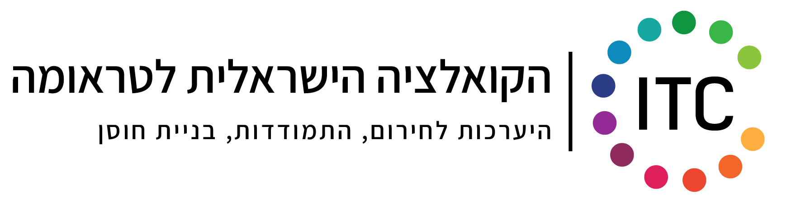

העצמת אנשים ועסקים
דרך קואצ'ינג בשילוב אמנות
בואו לחוות את השילוב הייחודי בין ליווי מקצועי להעצמה אמנותית.
צליל בר מנחה סדנאות ותהליכי הכשרה המגשרים על הפער שבין
אסטרטגיה עסקית לנשמה יצירתית, ומפתחת צמיחה משמעותית.


הסיפור שלי
אני צליל, ובמשך שנים עבדתי עם אנשים שהרגישו שהם "עושים הכל נכון" - אבל עדיין חסר משהו. התשוקה דעכה, החלומות נדחו, והחיים הפכו לרשימת מטלות.
הבנתי שהשינוי האמיתי לא קורה דרך עוד טיפ או טכניקה. הוא קורה כשמתחילים להקשיב לעצמנו באמת - ולפעמים, דווקא דרך היצירה והאמנות, נפתחות דלתות שמילים לא מצליחות לפתוח.
אני משלבת מנטורינג ממוקד עם תרפיה באמצעות אמנות, כי אני מאמינה שלכל אחד מאיתנו יש חוכמה פנימית - רק צריך לדעת איך לגשת אליה.
איך אני יכולה לעזור"השינוי האמיתי מתחיל ברגע שמפסיקים לחכות לתנאים מושלמים - ומתחילים לפעול מתוך מי שאתם היום"
איך נעבוד יחד
כל אחד מגיע עם הסיפור שלו. יחד נמצא את הדרך שמתאימה לכם.
מנטורינג אישי
ליווי אחד-על-אחד לאנשים שמרגישים תקועים ומחפשים כיוון. נזהה יחד את החסמים האמיתיים, נגדיר מה באמת חשוב לכם, ונבנה תוכנית פעולה שמתאימה לחיים שלכם - לא לחיים של מישהו אחר.
מנטורינג עסקי
בעלי עסקים רבים מגלים שההצלחה העסקית לא מביאה סיפוק. נעבוד על החיבור בין מה שאתם עושים לבין מי שאתם - כי עסק שבנוי על הערכים שלכם הוא עסק שמשגשג לאורך זמן.
סדנאות קבוצתיות
יש כוח מיוחד בעבודה קבוצתית - השיקוף, התמיכה, ההבנה שאנחנו לא לבד. הסדנאות שלי משלבות למידה חווייתית, שיתוף ויצירה, ומייצרות שינוי שנשאר איתכם הרבה אחרי שהסדנה נגמרת.
תרפיה באמנות
לא צריך להיות אמנים. היצירה היא כלי לגילוי עצמי - דרכה אנחנו ניגשים לרבדים שהשכל לא תמיד מצליח להגיע אליהם. זו דרך עוצמתית במיוחד למי שמרגישים שהם "יודעים" מה הבעיה, אבל משהו עדיין לא זז.
מה אומרים עליי
"הסדנה של צליל שינתה לי את הדרך שבה אני מסתכלת על העסק שלי. השילוב בין אמנות לקואצ'ינג פתח לי צוהר חדש לגמרי."
"אחרי שנים של תחושת תקיעות, התהליך עם צליל עזר לי להבין מה באמת חשוב לי ולפעול מתוך מקום של בהירות ועוצמה."
"צליל יוצרת מרחב בטוח ומקבל שמאפשר לך להיפתח. היצירה דרך אמנות חשפה דברים שלא הצלחתי לבטא במילים."



רגעים מהשטח
הצצה לסדנאות, אירועים ותהליכים


שאלות נפוצות
כל מה שרציתם לדעת על קואצ'ינג, אימון ו-NLP
קואצ'ינג הוא תהליך ממוקד מטרה שמתמקד בהווה ובעתיד - לאן אתם רוצים להגיע ואיך להגיע לשם. בניגוד לטיפול פסיכולוגי שעוסק בריפוי פצעי העבר, קואצ'ינג מניח שאתם שלמים ובריאים, ומלווה אתכם בזיהוי חסמים, הגדרת יעדים ובניית תוכנית פעולה. זה תהליך אקטיבי שמעצים אתכם לקחת אחריות ולייצר שינוי אמיתי בחיים.
NLP (תכנות נוירו-לשוני) הוא אוסף של כלים וטכניקות שחוקרים את הקשר בין המחשבות שלנו, השפה שאנחנו משתמשים בה, ודפוסי ההתנהגות שלנו. בתהליך האימון, NLP עוזר לזהות ולשנות דפוסי חשיבה מגבילים, לבנות אמונות מעצימות, ולפתח אסטרטגיות חדשות להתמודדות עם אתגרים. זו דרך יעילה ומהירה לייצר שינוי עמוק ומתמשך.
התהליך מתאים לכל מי שמרגיש שהוא מוכן לשינוי - בין אם זה אנשים שמרגישים תקועים בחיים האישיים, בעלי עסקים שרוצים לצמוח, מנהלים שמחפשים כיוון חדש, או כל מי שרוצה להכיר את עצמו לעומק ולחיות חיים יותר מדויקים ומספקים. אין צורך בניסיון קודם - רק ברצון אמיתי להתפתח.
תהליך אימון טיפוסי נמשך בין 8 ל-12 מפגשים, בדרך כלל פעם בשבוע או פעם בשבועיים. כל מפגש נמשך כשעה. עם זאת, כל תהליך הוא אישי - יש אנשים שמרגישים שינוי משמעותי כבר אחרי מספר מפגשים, ויש כאלה שבוחרים להמשיך בליווי לאורך זמן ארוך יותר. בשיחת ההיכרות נתאים יחד את המסגרת שמתאימה לכם.
הפגישה הראשונה היא שיחת היכרות חופשית ללא התחייבות. נשב יחד, תספרו לי מה מביא אתכם, מה מאתגר אתכם ולאן תרצו להגיע. אני אשתף אתכם בגישה שלי ונבדוק יחד אם יש כימיה ואם הדרך שלי מתאימה לכם. חשוב לי שתרגישו בנוח ושהבחירה תהיה מתוך תחושת חיבור אמיתי.
בהחלט! זה בדיוק הייחוד שלי. השילוב בין קואצ'ינג לתרפיה באמנות מאפשר לעבוד גם ברמה הקוגניטיבית (מחשבות, אמונות, יעדים) וגם ברמה הרגשית-יצירתית. האמנות פותחת דלתות שמילים לפעמים לא מצליחות - היא מאפשרת לגעת ברבדים עמוקים יותר ולהביא לשינוי שמורגש בכל הגוף, לא רק בראש.
במנטורינג אישי אנחנו מתמקדים בכם - בערכים, בחלומות, בחסמים ובהתפתחות האישית שלכם. במנטורינג עסקי, אנחנו לוקחים את אותם כלים ומיישמים אותם בהקשר העסקי - חיבור הערכים האישיים שלכם לעסק, מציאת הכיוון הנכון, ובניית אסטרטגיה שנובעת ממי שאתם באמת. לעתים קרובות שני התחומים משתלבים, כי צמיחה אישית ועסקית הולכות יד ביד.
בוודאי! אין שום צורך בניסיון קודם או בכישרון אמנותי. הסדנאות שלי לא עוסקות ביצירת "יצירות אמנות יפות" - הן משתמשות באמנות ככלי לגילוי עצמי, לביטוי רגשי ולהעצמה. כל אחד יכול להשתתף, והחוויה מפתיעה גם את אלה שמשוכנעים ש"הם לא אמנותיים". דווקא מי שמגיע בלי ציפיות, מגלה דברים מדהימים.
בואו נדבר
השאירו פרטים ואחזור אליכם תוך 24 שעות